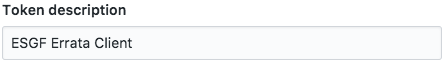

Authentication
Authentication is essential to use the "write" features of the esgissue package.
GitHub setup
A verified (by email) GitHub account is required, as well as a personal access token generated through your GitHub profile setting page.
- Go on the bottom of the left menu to access to "Developer Settings":
- Click on "Personal Access Token":
- Click on "Generate new token"
- Generate your token

Make sure you associate a meaningful name and description for your newly generated token, to help you manage your tokens.
The next important step is to set the minimum required scope for your personal access token: orgs:READ. Limiting the number of scopes increases the security of your own personal data associated with your github account.

The authentication part is set by creating the personal access token.
Authorization is controlled using GitHub's organizations invitational based structure. The ES-DOC-ERRATA administrator is the only person qualified to add GitHub users to the requested teams. For the authorization, a user needs to be part of the organization team specified for the institute and project he/she on behalf of which wishes to publish errata.
Credentials management
In order to ease the interactions with the ES-DOC-ERRATA web service, a user can save the credentials for recurrent use. This can be done either through environment variables:
$> export ERRATA_CLIENT_GITHUB_TOKEN=xxxxxxxxxxxxxxxxxxxxxxxxxxxxxxxxx
This will enable the client to retrieve the token whenever the action requires it and stops it from prompting the user to type it in. However setting the token on environment variables sets it up for grabs in clear text. For this reason an encrypted local file solution is more encouraged to be employed by users. This file is encrypted using a chosen pass-phrase but it also is valid on the currently used machine only. In order to generate your token local file:
$> esgissue credset
After setting your credentials you might want to give the new credentials a test and see if they work as expected. To do this the credtest command test your authentication then authorization linked to the selected institute errata management for a specific project.
$> esgissue credtest -i institute_name -p project
After declaring these credentials, the client will only ask user to provide the pass-phrase from now on. In case the user forgets the pass-phrase the saved credentials can be reset using the command:
$> esgissue changepass
Note
Old and new pass-phrases can be submit on the command-line to avoid the prompt.
In the event of wanting to remove your saved credentials that you have saved on your machine:
$> esgissue credremove